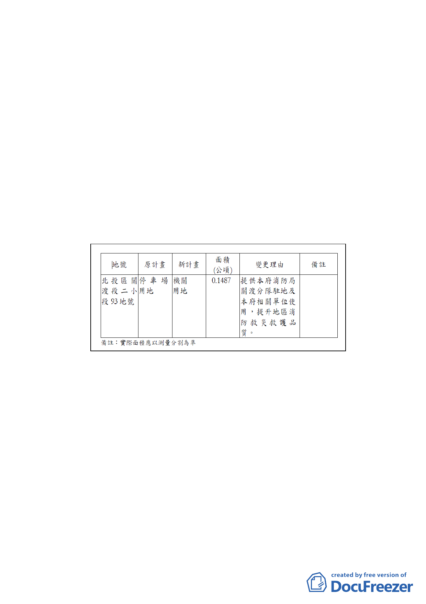

平方公尺。
（二） 使用分區：「停車場用地（公共設施用地）」。
（三） 土地權屬：土地所有權為臺北市，管理機關為臺北市停車
管理工程處。
（四） 依本市停車管理工程處檢討，本案基地由停車場用地變更
為機關用地供本府消防局關渡分隊使用，應考量原停車場
用地周邊之公眾停車需求，於基地內規劃30~50 席公共汽
車停車場開放供公眾使用。
三、 變更細部計畫內容概述：
為配合本府消防局防救災服務半徑之需求，將現況作平面
停車場使用之停車場用地變更為機關用地，供消防局關渡
分隊暨本府相關單位使用，以符管用合一。
四、 事業及財務計畫：本計畫範圍1筆土地為市有，後續由本府
需地機關依「臺北市市有財產管理自治條例」規定取得土
地（價購）。開闢經費49,463萬元，預定完工期程民國106
年。
五、 全案係市府103年1月20日府都規字第10239873003號函送
到會，並於103年1月21日起公開展覽30天。
六、 公民或團體所提意見：無。
七、 申請單位：臺北市政府消防局。
八、 辦理機關：臺北市政府。
九、 法令依據：都市計畫法第27條第1項第4款。
決議：照案通過。
-3-